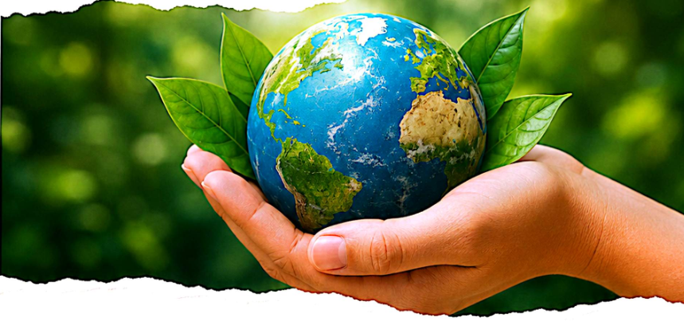
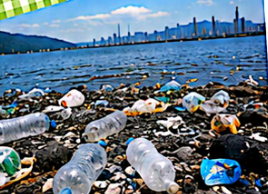
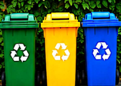

¿Alguna vez pensaste qué pasaría si todos dejáramos de cuidar el ambiente? El planeta nos brinda agua, aire, alimentos y muchos recursos que necesitamos para vivir. Sin embargo, nuestras acciones pueden afectar de manera positiva o negativa a la naturaleza.

Por eso, conocer los problemas ambientales y aprender cómo podemos prevenirlos es un paso importante para cuidar nuestro entorno. A continuación, veremos algunas acciones sencillas que podemos realizar todos los días.

Contaminación
Uno de los principales problemas ambientales es la contaminación. La basura que arrojamos en lugares incorrectos, el exceso de plástico, el humo de los vehículos y la contaminación del agua pueden perjudicar a los animales, las plantas y también a las personas.

Reducir, reutilizar y reciclar
Una forma de ayudar es reducir la cantidad de residuos que producimos. Podemos reutilizar objetos, separar los residuos y reciclar materiales como papel, cartón, vidrio y plástico.
Cuidemos el agua
Algunas acciones simples son cerrar la canilla mientras nos cepillamos los dientes, evitar dejarla correr innecesariamente y no arrojar basura ni productos contaminantes en ríos, lagos o desagües.
Protejamos los espacios verdes
Plantar árboles, no dañar las plantas y mantener limpios los parques y plazas ayuda a conservar la biodiversidad y mejora la calidad del aire.
¿Qué podemos hacer desde la escuela?
Además, desde la escuela podemos realizar campañas de concientización, colocar recipientes para separar residuos y compartir información con nuestras familias y con la comunidad.
- Campañas de concientización: Informar y sensibilizar a nuestra comunidad sobre la importancia de cuidar el ambiente.
- Separar residuos: Colocar recipientes diferenciados para papel, plástico, vidrio y orgánicos en la escuela.
- Compartir información: Llevar lo aprendido a nuestras familias y vecinos para que cada vez seamos más personas comprometidas.
Juntos podemos lograr un ambiente más limpio y saludable para todos. El planeta es nuestro hogar, cuidémoslo hoy para tener un mejor mañana.
Cierre
Cuidar el ambiente no depende solamente de grandes acciones. Cada pequeño cambio puede hacer una diferencia. Si aprendemos a utilizar los recursos de manera responsable y ayudamos a que otras personas también lo hagan, estaremos colaborando para construir un ambiente más limpio y saludable para todos.